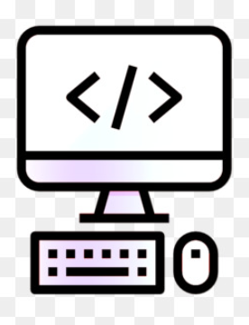
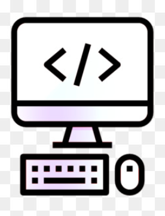

Olá, eu sou o Nike.
Sou futuro Policial Federal e fundador de um time de Desenvolvimento Web aqui de Uberlândia, MG.
 

Com ênfase no front-end, realizamos serviços na WEB como a criação de sites, plataformas para CRM, landing pages etc.
Nossa função é ajudar a alavancar o seu empreendimento no mundo misterioso da Web Pública e a se proteger de eventuais golpes ou fraudes que acontecem muito hoje em dia com o avanço e inovação da tecnologia.
Ah, já advertindo a você que, caso tenha alguma denúncia que não foi solucionada no posto de polícia mais próximo de você, uma segunda solução é registrar seu caso aqui. Entre em contato com nossos consultores para preencher sua ficha. Se tudo der certo, vamos localizar e aniquilar esse "mal" que assola nossa geração.
Normalmente, com ênfase no front-end, realizamos serviços na WEB (VENDA DE SITES, PLATAFORMAS PARA CRM, LANDING PAGE etc.). Usamos ferramentas primitivas de computação e uma mistura de engenharia social. Usamos as melhores técnicas de invasão e pesquisa de informações e possíveis criminosos.
Hoje, o meu time atua no mercado de soluções de e-commerce, CEO e Hacking há mais ou menos 6 anos. Com toda essa experiência, tanto prática quanto didática, abriu portas para mim e meus amigos em várias empresas no mundo Digital. E, caso tenha interesse em participar do nosso time, é só ficar esperto no Instagram da loja.

Eu entrei nesse mundo através do Minecraft, hahaha!
Acredite, eu amava trocar as roupinhas (skins) dos personagens e adicionar funções que normalmente não estão visíveis para os usuários. Foi com essa minha mania de ficar codificando e decifrando vários tipos de códigos em jogos que eu gostava que me inspirei a estudar todos esses anos por prazer, visando sempre a eficiência e o equilíbrio entre a razão e os sonhos. Isso me deu uma nova visão de como funciona o mundo como um todo.
Nossas ferramentas e linguagens favoritas são:
JAVA, JAVASCRIPT, VSCODE - WEB, DEV TOOLS, HY SPY, HTML5, TAILWIND CSS, PAINT, GOOGLE SKIES, CSS, PHP, WORDPRESS, entre outros.
Usamos JAVA para criar aplicativos móveis e web, JAVASCRIPT para adicionar interatividade aos nossos sites e VSCODE - WEB para editar nossos códigos. Também usamos DEV TOOLS para depurar nossos códigos e HY SPY para capturar dados de usuários.


Aqui, minha função é desenvolver ambientes digitais que têm como foco conectar pessoas do mundo todo.
A lista é grande, mas normalmente gostamos dessas pelo custo-benefício e eficiência.
Eu simplesmente não sei dizer o quanto amo a área de programação, inovação e revolução da tecnologia. Nela, estou sempre aprendendo mais e mais a cada dia que passa. Não importa o quanto eu estude, sempre haverá mais a se descobrir sobre este mundo misterioso e maravilhoso que é a internet.
Atualmente, é algo que faço por amor, com força de vontade e sem fins lucrativos. Sinto que isso é parte de mim.
Existe um Pablo de antes e depois da programação. Isso é fato, mas há algo diferente. Quando eu tenho insônia, escrevo código. Quando estou feliz, escrevo código. Quando alguma coisa está desabando e tudo dá errado, escrevo código para melhorar. E quando está tudo bem, fico o dia inteiro escrevendo código... haha, chega a ser engraçado.
Quando vi que estava nesse nível de dedicação por vontade própria, resolvi investir e tirar o máximo de proveito disso.
Isso não é um hobby, isso não é um simples trabalho involuntário. Isso é a junção de tudo o que sou.
Isso é parte de mim.
Isso é PK Digital Products.
- Nike
- Desenvolvedor de Software
- Uberlândia,MG Brasil.

Projetos

História do sistema operacional Android
A história do sistema operacional Android começa em 2003, quando Andy Rubin, Rich Miner, Nick Sears e Chris White fundaram a Android Inc., uma empresa de software com sede em Palo Alto, Califórnia. A empresa foi adquirida pelo Google em 2005 por US$ 50 milhões.
O objetivo da Android Inc. era desenvolver um sistema operacional para dispositivos móveis que fosse aberto e flexível, permitindo que os fabricantes de dispositivos e desenvolvedores de aplicativos personalizassem o sistema de acordo com suas necessidades.
O primeiro lançamento do Android foi em 2008, com o lançamento do HTC Dream, o primeiro smartphone com o sistema operacional. O Android rapidamente se tornou popular, e hoje é o sistema operacional mais usado em smartphones em todo o mundo.
A evolução do Android ao longo dos anos pode ser dividida em quatro principais fases:
Fase 1 (2008-2010): A primeira fase do Android foi marcada pelo lançamento das primeiras versões do sistema operacional, como o Android 1.0, Android 1.1 e Android 1.5 Cupcake. Nessa fase, o Android ainda estava em desenvolvimento, e o foco era criar um sistema operacional básico e funcional.
Fase 2 (2010-2013): A segunda fase do Android foi marcada pelo lançamento das versões Android 2.0 Froyo, Android 2.2 Froyo e Android 2.3 Gingerbread. Nessa fase, o Android ganhou novos recursos e funcionalidades, como suporte a telas maiores, multitarefa e câmera frontal.
A história do sistema operacional Android começa em 2003, quando Andy Rubin, Rich Miner, Nick Sears e Chris White fundaram a Android Inc., uma empresa de software com sede em Palo Alto, Califórnia. A empresa foi adquirida pelo Google em 2005 por US$ 50 milhões. O objetivo da Android Inc. era desenvolver um sistema operacional para dispositivos móveis que fosse aberto e flexível, permitindo que os fabricantes de dispositivos e desenvolvedores de aplicativos personalizassem o sistema de acordo com suas necessidades. O primeiro lançamento do Android foi em 2008, com o lançamento do HTC Dream, o primeiro smartphone com o sistema operacional. O Android rapidamente se tornou popular, e hoje é o sistema operacional mais usado em smartphones em todo o mundo. A evolução do Android ao longo dos anos pode ser dividida em quatro principais fases: Fase 1 (2008-2010): A primeira fase do Android foi marcada pelo lançamento das primeiras versões do sistema operacional, como o Android 1.0, Android 1.1 e Android 1.5 Cupcake. Nessa fase, o Android ainda estava em desenvolvimento, e o foco era criar um sistema operacional básico e funcional. Fase 2 (2010-2013): A segunda fase do Android foi marcada pelo lançamento das versões Android 2.0 Froyo, Android 2.2 Froyo e Android 2.3 Gingerbread. Nessa fase, o Android ganhou novos recursos e funcionalidades, como suporte a telas maiores, multitarefa e câmera frontal. Fase 3 (2013-2016): A terceira fase do Android foi marcada pelo lançamento das versões Android 4.0 Ice Cream Sandwich, Android 4.1 Jelly Bean, Android 4.4 KitKat e Android 5.0 Lollipop. Nessa fase, o Android ganhou um novo visual, baseado no Material Design, e novos recursos, como suporte a NFC, assistente virtual e tela de bloqueio personalizável.
Fase 4 (2016-presente): A quarta fase do Android está em andamento, e é marcada pelo lançamento das versões Android 6.0 Marshmallow, Android 7.0 Nougat, Android 8.0 Oreo, Android 9.0 Pie, Android 10, Android 11, Android 12 e Android 13. Nessa fase, o Android continua a ganhar novos recursos e funcionalidades, como suporte a inteligência artificial, privacidade aprimorada e segurança aprimorada.
O Android é um sistema operacional que continua a se desenvolver e a crescer. Com o lançamento de novas versões e recursos, o Android se torna cada vez mais poderoso e versátil, tornando-se a escolha preferida de milhões de usuários em todo o mundo.
Alguns dos principais recursos e funcionalidades do Android incluem:
Sistema operacional aberto e flexível: O Android é um sistema operacional de código aberto, o que significa que qualquer pessoa pode usar, modificar ou redistribuir o código-fonte. Essa flexibilidade permite que os fabricantes de dispositivos e desenvolvedores de aplicativos personalizem o sistema de acordo com suas necessidades.
Suporte a uma ampla gama de dispositivos: O Android é compatível com uma ampla gama de dispositivos, desde smartphones e tablets até TVs e carros. Essa flexibilidade permite que o Android seja usado em uma variedade de contextos.
Ecossistema de aplicativos robusto: O Android tem um ecossistema de aplicativos robusto, com milhões de aplicativos disponíveis na Google Play Store. Essa variedade de aplicativos permite que os usuários encontrem o que precisam para produtividade, entretenimento e muito mais.
Suporte a recursos avançados: O Android suporta uma variedade de recursos avançados, como suporte a multitarefa, câmera frontal, NFC, assistente virtual e tela de bloqueio personalizável. Esses recursos tornam o Android um sistema operacional poderoso e versátil.
Aqui eu troxe um projeto que criei do zero, é apenas um esboço.
Aqui nessa epoca o professor era o Gustavo Guanabara, eu particularmente dou nota 10 e indico sempre pros meus amigos.
ultilizei a minha logica e tentei obter o mesmo resultado proposto no curso visando limpar o codigo e dexar ele mais leve mas isso com minha logica e meu codidos.
É mais um demontração, não se apega no site se não. hahah

Esse é um projeto que eu fiz com a intenção de apenas testar minha habilidades, tentei fazer igualzinho o original para aperfeiçor tecnicas.
Aah relaxa viu lá não guarda nenhuma informação, mas serve para tu usar de base e ter uma noção de qual nivél estou, aqui tu pode ver a qualidade do meu trabalho.
história da Netflix
A história da Netflix começa em 1997, quando Marc Randolph e Reed Hastings fundaram a empresa em Scotts Valley, Califórnia. A ideia inicial era estabelecer um serviço de aluguel de DVD online, um conceito que ainda estava em seus estágios iniciais na época. Randolph, um especialista em marketing, e Hastings, um engenheiro de software, reconheceram o potencial da internet para revolucionar a forma como as pessoas consumiam filmes e séries de televisão.
Os primeiros anos da Netflix foram marcados por um foco na inovação e na satisfação do cliente. A empresa introduziu um modelo de assinatura única com taxa fixa, permitindo que os membros alugassem DVDs ilimitados por uma taxa mensal. Isso eliminou a necessidade de multas por atraso e simplificou o processo de aluguel, tornando-o mais conveniente para os consumidores. Além disso, a Netflix implementou um sofisticado sistema de recomendação que sugeria filmes e séries de televisão com base nas preferências individuais, aprimorando a experiência geral do usuário.
Em 2000, a Netflix alcançou um marco significativo ao ultrapassar 200.000 assinantes, demonstrando a crescente popularidade de seu serviço de aluguel de DVD. A empresa continuou a expandir suas ofertas, adicionando mais DVDs ao seu catálogo e introduzindo novos recursos, como gerenciamento de fila online e recomendações personalizadas.
À medida que a tecnologia da internet avançou, a Netflix reconheceu o potencial da mídia de streaming. Em 2007, a empresa lançou seu serviço de streaming, permitindo que os assinantes assistissem filmes e séries de televisão instantaneamente pela internet. Isso marcou um momento crucial na história da Netflix, pois ela passou de uma empresa tradicional de aluguel de DVD para uma pioneira na indústria de entretenimento digital.
A introdução do streaming provou ser uma mudança de jogo para a Netflix. A conveniência e a flexibilidade de assistir a conteúdo sob demanda, combinadas com a vasta biblioteca de filmes e séries de televisão da Netflix, atraiu milhões de novos assinantes. O crescimento da empresa acelerou rapidamente, e em 2010, ela havia ultrapassado 10 milhões de assinantes nos Estados Unidos.
A história da Netflix começa em 1997, quando Marc Randolph e Reed Hastings fundaram a empresa em Scotts Valley, Califórnia. A ideia inicial era estabelecer um serviço de aluguel de DVD online, um conceito que ainda estava em seus estágios iniciais na época. Randolph, um especialista em marketing, e Hastings, um engenheiro de software, reconheceram o potencial da internet para revolucionar a forma como as pessoas consumiam filmes e séries de televisão. Os primeiros anos da Netflix foram marcados por um foco na inovação e na satisfação do cliente. A empresa introduziu um modelo de assinatura única com taxa fixa, permitindo que os membros alugassem DVDs ilimitados por uma taxa mensal. Isso eliminou a necessidade de multas por atraso e simplificou o processo de aluguel, tornando-o mais conveniente para os consumidores. Além disso, a Netflix implementou um sofisticado sistema de recomendação que sugeria filmes e séries de televisão com base nas preferências individuais, aprimorando a experiência geral do usuário. Em 2000, a Netflix alcançou um marco significativo ao ultrapassar 200.000 assinantes, demonstrando a crescente popularidade de seu serviço de aluguel de DVD. A empresa continuou a expandir suas ofertas, adicionando mais DVDs ao seu catálogo e introduzindo novos recursos, como gerenciamento de fila online e recomendações personalizadas. À medida que a tecnologia da internet avançou, a Netflix reconheceu o potencial da mídia de streaming. Em 2007, a empresa lançou seu serviço de streaming, permitindo que os assinantes assistissem filmes e séries de televisão instantaneamente pela internet. Isso marcou um momento crucial na história da Netflix, pois ela passou de uma empresa tradicional de aluguel de DVD para uma pioneira na indústria de entretenimento digital. A introdução do streaming provou ser uma mudança de jogo para a Netflix. A conveniência e a flexibilidade de assistir a conteúdo sob demanda, combinadas com a vasta biblioteca de filmes e séries de televisão da Netflix, atraiu milhões de novos assinantes. O crescimento da empresa acelerou rapidamente, e em 2010, ela havia ultrapassado 10 milhões de assinantes nos Estados Unidos. O sucesso da Netflix não foi sem seus desafios. A empresa enfrentou a concorrência de empresas de mídia estabelecidas, como a Blockbuster e a HBO, bem como o aumento dos custos de conteúdo e as complexidades de gerenciar um serviço de streaming global. No entanto, a Netflix permaneceu comprometida com sua visão de fornecer uma experiência de entretenimento perfeita e personalizada, e seu foco na inovação e na satisfação do cliente permitiu que ela superasse esses obstáculos.
Em 2013, a Netflix tomou uma decisão estratégica de focar inteiramente no streaming, descontinuando seu serviço de aluguel de DVD. Essa mudança foi um passo ousado, mas acabou se provando a decisão certa para a empresa. O streaming tornou-se a forma dominante de consumo de entretenimento, e a Netflix se posicionou como o principal provedor de serviços de streaming.
Hoje, a Netflix opera em mais de 190 países e tem mais de 220 milhões de assinantes em todo o mundo. Oferece uma vasta biblioteca de filmes, séries de televisão, documentários e programação original, atendendo a uma ampla gama de gostos e preferências. A empresa continua a investir pesadamente na criação de conteúdo, produzindo programas originais premiados que receberam elogios da crítica e sucesso popular.
A jornada da Netflix de uma pequena empresa de aluguel de DVD para um gigante do entretenimento global é um testemunho de seu espírito inovador, seu compromisso inabalável com a satisfação do cliente e sua capacidade de se adaptar ao cenário em constante mudança da indústria de mídia digital. À medida que a tecnologia continua a evoluir e as expectativas dos consumidores mudam, a Netflix está preparada para permanecer na vanguarda da indústria do entretenimento, moldando a forma como as pessoas consomem e experimentam histórias nos próximos anos.
- Modelo de assinatura única com taxa fixa para aluguel de DVD
- Sistema de recomendação sofisticado
- Introdução do serviço de streaming
- Mudança para o modelo apenas de streaming
- Expansão global
- Investimento em programação original
Marcos e inovações importantes:
No geral, a história da Netflix é marcada pela inovação, pela satisfação do cliente e pela capacidade de se adaptar ao cenário em constante mudança da indústria de mídia digital. A empresa se transformou de uma pequena empresa de aluguel de DVD em um gigante do entretenimento global, e continua a moldar a forma como as pessoas consomem e experimentam histórias.

Eu conclui que toda sabedoria é valida mas nem toda sabedoria me convém.
Não quero ir para a parte de gravar dados ainda mas essa parte existe e o golpe funciona exatamente assim oh, pessoal mal intencionadas usando sites parecedidos para tirar seu dinheiro... Por favor denuncia aqui pra gente achar eles e quem sabe devolver o dinheiros das pessoas que foram lezadas, o foco é front-end no momento.
Lá não salva nenhuma informação e também tem alguns detelhes que eu tive a intenção de não corrigir por preguiça mesmo mas provavelmente eu fiquei com agonia e arrumei.
Não tem fins lucrativos e serve apenas como um teste de capacidade.
PRÉSTA ATENÇÃO, DÁ PRA DESCOBRIR QUE É FALSO SÓ DE OLHAR O LINK.
Enfim,dá para descobrir que é falso, mas isso por que eu quis mostrar pra você o que é possivel fazer hoje usando um simples compultador de mesa antigo.
Amo desenvolvimento por conta disso.
São tantas formas de se trabalhar, moldar, receber e transmitir com as informações hoje em dia, aprender isso é questão de esforço.
história do Twitter
A história do Twitter remonta a 2006, quando Jack Dorsey, Evan Williams e Biz Stone colaboraram para criar uma plataforma de microblogging que permitisse às pessoas compartilhar breves pensamentos e atualizações com seus seguidores. O nome original do serviço era "twttr", sem vogais, mas foi posteriormente alterado para Twitter.
Em março de 2006, Dorsey postou o primeiro tweet, "just setting up my twttr", marcando o início oficial da plataforma. O Twitter rapidamente ganhou popularidade, alcançando 1 milhão de usuários registrados em apenas seis meses.
Em 2007, o Twitter introduziu dois recursos fundamentais: a integração com SMS e o hashtag. A integração com SMS permitia aos usuários enviar tweets diretamente de seus celulares, ampliando o alcance da plataforma. Já o hashtag, representado pelo símbolo "#", facilitava a descoberta e organização de tópicos específicos.
Em 2008, o Twitter ultrapassou 10 milhões de usuários registrados e se tornou uma ferramenta essencial para a cobertura de eventos de última hora, como a eleição presidencial dos Estados Unidos. No ano seguinte, a plataforma introduziu o botão de retweet, permitindo aos usuários compartilhar tweets de outros usuários com seus próprios seguidores.
A década de 2010 marcou a consolidação do Twitter como uma plataforma de comunicação global. Em 2010, o Twitter foi utilizado para transmitir ao vivo a cerimônia do Oscar, atingindo 50 milhões de usuários registrados. Em 2011, a plataforma desempenhou um papel crucial na cobertura das revoltas da Primavera Árabe, alcançando 100 milhões de usuários registrados.
Em 2012, o Twitter introduziu o recurso de "tweets promovidos", permitindo que empresas e organizações pagassem para que seus tweets aparecessem de forma mais destacada na plataforma. No mesmo ano, a empresa adquiriu o Vine, um aplicativo de vídeos curtos.
Em 2013, o Twitter abriu seu capital na Bolsa de Valores de Nova York, marcando um marco significativo em sua trajetória. Em 2015, a empresa adquiriu o Periscope, um aplicativo de transmissão ao vivo.
A história do Twitter continuou a se desenrolar na década de 2020. Em 2021, Jack Dorsey renunciou ao cargo de CEO, sendo substituído por Parag Agrawal. Em 2022, Elon Musk adquiriu o Twitter por US$ 44 bilhões, gerando expectativas e incertezas sobre o futuro da plataforma.
Ao longo de sua história, o Twitter se tornou uma ferramenta poderosa para comunicação, disseminação de notícias e ativismo social. A plataforma possibilitou a conexão entre pessoas de diferentes partes do mundo, facilitando a troca de ideias e a mobilização social. No entanto, o Twitter também enfrentou desafios, como a disseminação de informações falsas e o abuso da plataforma para fins maliciosos.
O futuro do Twitter permanece incerto, mas a plataforma certamente continuará a desempenhar um papel importante na comunicação e na sociedade digital. A capacidade do Twitter de se adaptar às mudanças tecnológicas e às necessidades dos usuários será crucial para sua continuidade e sucesso.
Sou tecnólogo e desenvolvedor Full Stack, já passei por várias empresas para aprender mais sobre como criar páginas, sites ou aplicativos. Vou destacar as empresas que mais marcaram meu crescimento como profissional.
Digital Innovation One
O DIO PRO está com uma oferta incrível de 43% OFF para os últimos dias de férias. Além de ter acesso ilimitado aos bootcamps da DIO e às formações profissionais exclusivas mais demandadas do mercado, como Machine Learning, Blockchain, Game Developer, .
O que é a plataforma DIO?
Programa de bolsas de estudo gratuitas promovidas por grandes empresas para você aprender e praticar novas tecnologias, além de te conectar com a sua próxima oportunidade profissional.
história da empresa Digital Innovation One (DIO)
A história da empresa Digital Innovation One (DIO) começa em 2018, quando Iglá Generoso e Bruno Maia fundaram a empresa em Belo Horizonte, Brasil. A ideia inicial era criar uma plataforma de educação gratuita que capacitasse profissionais da área de tecnologia.
No ano de 2019, a DIO lançou seus primeiros cursos online gratuitos de desenvolvimento de software. Em 2020, a empresa fechou parcerias com grandes empresas de tecnologia para oferecer oportunidades de carreira para seus alunos.
Em 2021, a DIO ultrapassou 1 milhão de usuários registrados e expandiu sua oferta de cursos para incluir ciência de dados, cibersegurança e marketing digital. No ano seguinte, a empresa foi reconhecida como uma das que mais crescem no Brasil pela Associação Brasileira de Startups (AB Startups).
- Mais de 1 milhão de usuários registrados
- Mais de 100.000 alunos colocados em empregos na tecnologia
- Parcerias com grandes empresas de tecnologia
- Reconhecimento como uma das empresas que mais crescem no Brasil
Ao longo de sua história, a DIO alcançou marcos importantes, como:
A DIO é uma empresa de edtech que está transformando a forma como as pessoas aprendem e acessam oportunidades de carreira na área de tecnologia. O compromisso da empresa em oferecer educação gratuita e de alta qualidade, bem como sua forte rede de parceiros, fizeram dela uma líder no mercado de edtech brasileiro.
- A empresa já ajudou mais de 100.000 pessoas a conseguirem empregos na tecnologia.
- A DIO oferece cursos gratuitos que capacitam pessoas de todas as origens e níveis de escolaridade.
- A empresa está ajudando a aumentar a diversidade e inclusão na indústria de tecnologia.
Aqui estão alguns exemplos específicos de como a DIO está impactando a vida das pessoas:
A DIO é uma empresa que está fazendo a diferença no mundo, e sua história ainda está apenas começando.
Grasshopper
O Grasshopper foi um aplicativo desenvolvido pelo Google que ensinava os usuários a codificar com JavaScript. Disponível para os sistemas operacionais iOS e Android, o programa tinha como objetivo ensinar com pequenas lições de codificação intuitivas.
- Animações: Aprenda a criar e manipular formas com a biblioteca D3, gráficos vetoriais escaláveis e JavaScript.
- Animações II: Crie animações interativas e manipuláveis com funções complexas e de seta.
- Métodos de array: Aprenda diferentes formas de pesquisar arrays, combinar elementos e transformar elementos com funções de seta.
- Automação: Aprenda a automatizar tarefas usando Apps Script, um produto do Google com tecnologia JavaScript.
- Depurar o código: Aprenda como detectar diferentes erros e como usar ferramentas como os comandos "try...catch" e console para depuração.
Após dar seus primeiros passos no Grasshopper, os níveis mais complexos de aprendizagem serão liberados a fim de aprimorar suas habilidades como programador. Entre eles, estão:
Qual o conteúdo do Google Grasshopper?
Após dar seus primeiros passos no Grasshopper, os níveis mais complexos de aprendizagem serão liberados a fim de aprimorar suas habilidades como programador. Entre eles, estão:
Animações: aprenda a criar e manipular formas com biblioteca D3, gráficos vetoriais escaláveis e JavaScript;
Animações II: crie animações interativas e manipuláveis com funções complexas e de seta;
Métodos de array: aprenda diferentes formas de pesquisar arrays, combinar elementos e transformar elementos com funções de seta;
Automação: aprenda a automatizar tarefas usando Apps Script, um produto do Google com tecnologia JavaScript;
Depurar o código: aprenda como detectar diferentes erros e como usar ferramentas como os comandos "try...catch" e console para depuração.
História da plataforma Grasshopper
O Grasshopper foi uma plataforma de aprendizado de programação desenvolvida pelo Google. O aplicativo foi lançado em 2017 e estava disponível para os sistemas operacionais iOS e Android.
O objetivo do Grasshopper era ensinar os usuários a codificar com JavaScript, uma linguagem de programação de propósito geral amplamente utilizada para desenvolvimento web, mobile e desktop. O aplicativo utilizava um método de ensino baseado em pequenos desafios interativos, que eram projetados para ajudar os usuários a aprender gradualmente os conceitos básicos da programação.
O Grasshopper foi bem recebido pela crítica, sendo elogiado por seu design intuitivo e seu conteúdo envolvente. O aplicativo foi também um sucesso comercial, tendo sido baixado por mais de 10 milhões de usuários em todo o mundo.
Em 2023, o Google anunciou que o Grasshopper seria descontinuado. A empresa afirmou que a decisão foi tomada para concentrar esforços em outros projetos educacionais.
- 2017: O Grasshopper é lançado.
- 2018: O Grasshopper é traduzido para 15 idiomas.
- 2019: O Grasshopper é baixado por mais de 10 milhões de usuários.
- 2023: O Grasshopper é descontinuado.
Principais marcos da história do Grasshopper
Impacto do Grasshopper
O Grasshopper teve um impacto significativo no ensino da programação. O aplicativo ajudou a popularizar o ensino de programação em pequenos desafios interativos, um método que tem sido adotado por outras plataformas de aprendizado de programação.
O Grasshopper também ajudou a aumentar o interesse pela programação entre pessoas de todas as idades e níveis de experiência. O aplicativo foi particularmente popular entre estudantes, que o usavam para aprender os fundamentos da programação antes de se aventurarem em projetos mais complexos.
Conclusão
O Grasshopper foi uma plataforma de aprendizado de programação inovadora que teve um impacto significativo na indústria da educação. O aplicativo ajudou a popularizar o ensino de programação em pequenos desafios interativos e aumentou o interesse pela programação entre pessoas de todas as idades e níveis de experiência.
Multiplanos
Aqui foi apenas um esboço, sabe? Um rascunho mesmo. Não tem nenhum fim lucrativo ou motivo velado.
A Multiplanos é apaixonada por crescer e promover o desenvolvimento e crescimento de todos os seus clientes, parceiros e colaboradores.
Nosso objetivo é manter um ambiente de trabalho ético, respeitoso, transparente, confiável e honesto, agregando valor aos nossos clientes
Automóveis
Realize seu sonho de ter o seu carro 0km ou seminovo com a Multiplanos!
Pesados
Caminhões, maquinários e outros equipamentos pesados, vem com a Multiplanos!
Imóveis
Realize o sonho da sua casa própria ou faça a reforma dos sonhos no seu lar!
Capital de giro
Ainda que nos últimos anos o tema esteja se aprofundando no Brasil, falar sobre dinheiro, planejamento financeiro, investimentos ainda representa um tabu para muitos.
Por ser considerado um meio seguro e eficiente para a aquisição de bens de alto valor, o consórcio tem ganhado cada vez mais força.
Não é necessário gastar muito tempo para pensar em boas razões para fazer um consórcio, mas eu particularmente não faria por ser uma pirâmide, é claramente um pirâmide.
A história da Multiplanos
A Multiplanos é uma empresa brasileira de consórcios fundada em 2003, em Uberlândia, Minas Gerais. A empresa foi criada por um grupo de empresários com o objetivo de oferecer uma forma segura e eficiente de adquirir bens de alto valor, como carros, imóveis e equipamentos pesados.
A Multiplanos começou suas atividades com apenas uma equipe de cinco pessoas, mas rapidamente cresceu e se tornou uma das maiores empresas de consórcios do Brasil. Em 2023, a empresa possuía mais de 1 milhão de clientes e administrava mais de R$ 10 bilhões em ativos.
O crescimento da Multiplanos se deve a uma série de fatores, incluindo a sua estratégia de diversificação de produtos, o seu foco no atendimento ao cliente e a sua cultura de inovação. A empresa oferece uma ampla gama de produtos de consórcios, incluindo consórcios de carros, imóveis, equipamentos pesados, capital de giro e serviços.
A Multiplanos também se destaca pelo seu atendimento ao cliente. A empresa oferece um atendimento personalizado e eficiente, com foco na satisfação dos clientes. A Multiplanos também investe em tecnologia para melhorar o seu atendimento, como o uso de chatbots e inteligência artificial.
A Multiplanos é uma empresa inovadora que está sempre buscando novas formas de melhorar o seu serviço. A empresa foi pioneira no uso de tecnologia para o gerenciamento de consórcios, e continua investindo em pesquisa e desenvolvimento para oferecer o melhor serviço possível aos seus clientes.
- 2003: A Multiplanos é fundada em Uberlândia, Minas Gerais.
- 2005: A Multiplanos oferece seu primeiro consórcio de carros.
- 2007: A Multiplanos oferece seu primeiro consórcio de imóveis.
- 2010: A Multiplanos oferece seu primeiro consórcio de equipamentos pesados.
- 2015: A Multiplanos oferece seu primeiro consórcio de capital de giro.
- 2023: A Multiplanos possui mais de 1 milhão de clientes e administra mais de R$ 10 bilhões em ativos.
Alguns marcos importantes da história da Multiplanos:
A Multiplanos no futuro
A Multiplanos é uma empresa bem posicionada para o futuro. A empresa possui uma forte base de clientes, uma cultura de inovação e uma estratégia de diversificação de produtos que a tornam bem preparada para atender às necessidades dos clientes.
A Multiplanos também está investindo em expansão internacional. A empresa já está presente em alguns países da América Latina, e planeja expandir sua presença para outros mercados no futuro.
A Multiplanos está comprometida em oferecer aos seus clientes a melhor experiência possível. A empresa acredita que o consórcio é uma forma segura e eficiente de adquirir bens de alto valor, e está comprometida em ajudar seus clientes a realizar seus sonhos.

Microlins
Referência nacional em Educação
A Microlins, nascida em 1991 na cidade de Lins, no interior de São Paulo, transformou-se na maior empresa de cursos profissionalizantes do País.
Focada no ensino de informática, a Microlins logo conquistou as principais cidades do Nordeste Paulista, instalando aí suas filiais. Tudo começou com alguns microcomputadores e uma turma de 15 alunos.
Presidida pelo Grupo MoveEdu, a rede é hoje referência no ramo de educação profissionalizante e conta com mais de 400 unidades localizadas em todo o território nacional.
Com mais de 30 anos de história e 18 de sistema de franquias, a Microlins já formou mais de 4 milhões de alunos e possui cerca de 10.000 colaboradores.
Atualmente em seu e-commerce e em suas unidades, a Microlins oferece diversas opções de cursos profissionalizantes e grátis nas áreas de Vendas, Marketing, Tecnologia, Gestão, Inglês, Indústria, Saúde e Preparatórios.
Curso em Vídeo
Gustavo Guanabara
Lançado em 2013, o projeto de ensinar tecnologia à distância foi ganhando forma e hoje já conta com milhares de alunos inscritos e uma grande quantidade de material gratuito.
O professor carioca Gustavo Guanabara sempre buscou criar aulas diferentes dentro da sua sala.
Quando descobriu que poderia dar aulas para milhares de pessoas pela internet, criou seu primeiro curso de PHP em 2005.
Desde aquela época, já teve mais de 8 milhões de downloads e colaborou para a formação de muitos programadores iniciantes.
Em 2013, com o apoio principal da Hostnet, Guanabara iniciou seu projeto mais ambicioso
ensinar tecnologia através de um site que disponibilizasse cursos completos em vídeo, com novas aulas lançadas semanalmente.
Ainda em 2013, foi lançado o Curso em Vídeo de HTML5 e no início de 2014, iniciou o Curso em Vídeo de Algoritmo. Ambos 100% gratuitos.
O Curso em Vídeo é um projeto de ensino de tecnologia à distância criado pelo professor carioca Gustavo Guanabara. O projeto foi lançado em 2013 e, desde então, já conta com mais de 10 milhões de alunos inscritos.
Gustavo Guanabara sempre foi apaixonado por tecnologia e ensino. Ele começou a dar aulas de programação em 2005, quando ainda era estudante universitário. Em 2009, ele lançou seu primeiro curso online, um curso de PHP que teve mais de 8 milhões de downloads.
Em 2013, Guanabara decidiu criar o Curso em Vídeo, um site que disponibiliza cursos completos em vídeo, com novas aulas lançadas semanalmente. O primeiro curso lançado foi de HTML5, seguido por um curso de algoritmos.
O Curso em Vídeo rapidamente se tornou um sucesso. O site oferece cursos de uma variedade de tópicos de tecnologia, incluindo programação, web design, desenvolvimento mobile, e muito mais. Os cursos são gratuitos e estão disponíveis para alunos de todo o mundo.
O Curso em Vídeo tem sido um importante instrumento de democratização do ensino de tecnologia. Ele oferece uma oportunidade de aprendizado de qualidade a pessoas de todas as classes sociais e níveis de conhecimento.
- 005: Gustavo Guanabara lança seu primeiro curso online, um curso de PHP.
- 2009: O curso de PHP de Guanabara tem mais de 8 milhões de downloads.
- 2013: O Curso em Vídeo é lançado, com o primeiro curso sendo de HTML5.
- 2014: O Curso em Vídeo lança seu curso de algoritmos.
- 2015: O Curso em Vídeo atinge 1 milhão de alunos inscritos.
- 2017: O Curso em Vídeo atinge 5 milhões de alunos inscritos.
- 2020: O Curso em Vídeo atinge 10 milhões de alunos inscritos.
Principais marcos da história do Curso em Vídeo:
Impacto do Curso em Vídeo:
O Curso em Vídeo tem tido um impacto significativo no ensino de tecnologia. Ele tem sido responsável pela formação de milhares de programadores e profissionais de tecnologia. O projeto também tem ajudado a popularizar a tecnologia no Brasil e no mundo.
O Curso em Vídeo é um exemplo de como a tecnologia pode ser usada para democratizar o acesso ao conhecimento. O projeto é gratuito e está disponível para alunos de todo o mundo. Isso significa que qualquer pessoa, independentemente de sua classe social ou nível de conhecimento, pode aprender sobre tecnologia através do Curso em Vídeo.
O projeto também tem ajudado a popularizar a tecnologia no Brasil. O Curso em Vídeo é um dos maiores projetos de ensino de tecnologia do país. Isso significa que o projeto tem ajudado a despertar o interesse pela tecnologia em um grande número de pessoas.
O Curso em Vídeo é um projeto importante que tem contribuído para a democratização do acesso ao conhecimento e à popularização da tecnologia.
Estou cursando lá do Fogaça, referência em Minas Gerais nas academias de polícia.
Instituto Fogaça
A Metodologia do Instituto Fogaça é tão eficiente que quase te obriga a ter resultados.
É mais ou menos assim:
- Explicamos os conteúdos.
- Te mostramos exemplos práticos.
- Fazemos questões com você.
- Te mostramos como acertar mais questões com as técnicas certas.
Em cada etapa (aula), nós:
Com isso, seus resultados são excelentes.
- O que funcionou para os alunos que foram aprovados.
- O que eles fizeram.
- E te damos modelos prontos para você copiar todas as estratégias.
Além disso, em todo o processo, nós te mostramos:
Atualmente, temos centenas de alunos aprovados utilizando o nosso método. Você pode ser o próximo aprovado.
“Aprenda com quem já chegou lá!”
O Instituto Fogaça foi fundado em 2016 pelo policial militar Kainan Fogaça, com o objetivo de ajudar pessoas a serem aprovadas em concursos públicos, especialmente concursos policiais.
Kainan Fogaça sempre foi apaixonado por concursos públicos e pela carreira policial. Ele se formou em Direito e, em seguida, ingressou na Polícia Militar de Minas Gerais. Durante sua carreira, ele percebeu que muitos candidatos a concursos públicos não tinham acesso a um bom treinamento e preparação.
Foi então que ele decidiu fundar o Instituto Fogaça. A escola oferece cursos preparatórios para concursos públicos, com foco em concursos policiais. Os cursos são ministrados por professores experientes, que são aprovados em concursos públicos.
O Instituto Fogaça rapidamente se tornou uma referência no mercado de cursos preparatórios para concursos públicos. A escola já ajudou milhares de alunos a serem aprovados em concursos policiais, incluindo concursos da Polícia Militar, Polícia Civil, Polícia Federal, Polícia Rodoviária Federal, entre outros.
- A qualidade dos professores, que são aprovados em concursos públicos;
- O método de ensino, que é baseado na prática e na resolução de questões;
- O suporte aos alunos, que é personalizado e oferecido por professores e coordenadores.
O sucesso do Instituto Fogaça se deve a vários fatores, incluindo:
O Instituto Fogaça é uma escola que acredita que todos podem ser aprovados em concursos públicos, independentemente de sua classe social ou nível de escolaridade. A escola oferece bolsas de estudo para alunos de baixa renda, e também oferece cursos preparatórios gratuitos para alunos que desejam se preparar para concursos policiais.
A história do Instituto Fogaça é uma história de sucesso e de transformação. A escola tem ajudado milhares de pessoas a realizarem seus sonhos de serem aprovados em concursos públicos, e tem contribuído para a democratização do acesso à educação.